1. Introduction
Thank you for choosing Alex, a clean one-page portfolio template for developers, designers and freelancers. It is written in plain HTML, CSS and JavaScript, so there is nothing to compile and no framework to learn. You can edit it in any text editor and publish it on any static host.
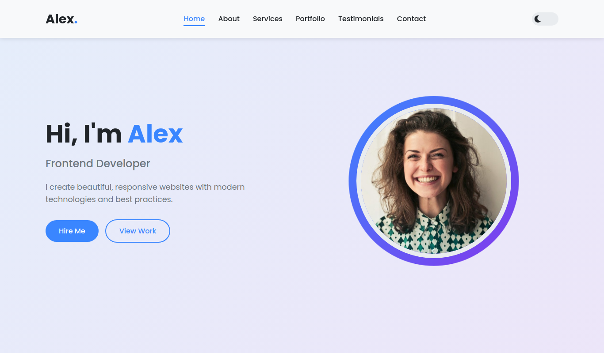
The hero section with your name, job title and call-to-action buttons (click to enlarge)
What is included
Hero, About with skill bars, Services, Portfolio, Testimonials and Contact.
One click toggle, remembered in the visitor's browser.
Buttons filter projects by category without reloading.
Arrows, dots and automatic sliding every five seconds.
Mobile menu, flexible grids and no horizontal scrolling.
Passes the W3C HTML and CSS checks with no errors.
2. Installation
Requirements
- A modern browser (Chrome, Edge, Firefox, Safari).
- A text editor such as VS Code, Sublime Text or Notepad++.
- An internet connection is only needed for the Poppins font from Google Fonts. Icons and scripts are bundled locally.
Step by step
- Download the purchase package from your ThemeForest Downloads page and unzip it.
- Open the
Alex-Portfoliofolder. Double-clickindex.htmlto preview the template locally. - Edit the files as described in this guide, then refresh the browser to see your changes.
- Upload the whole folder to your hosting. See the options below.
Publishing options
| Host | How to publish |
|---|---|
| cPanel / shared hosting | Open File Manager, go to public_html, upload the contents of the folder (not the folder itself) so that index.html sits in the root. |
| Netlify | Log in, choose Add new site, Deploy manually and drag the folder into the upload area. |
| Vercel | Install the Vercel CLI, run vercel inside the folder and follow the prompts. |
| GitHub Pages | Push the files to a repository, then enable Pages under Settings, Pages and select the main branch. |
3. File structure
The package is small and easy to navigate. The three files you will edit most are index.html, style.css and script.js.
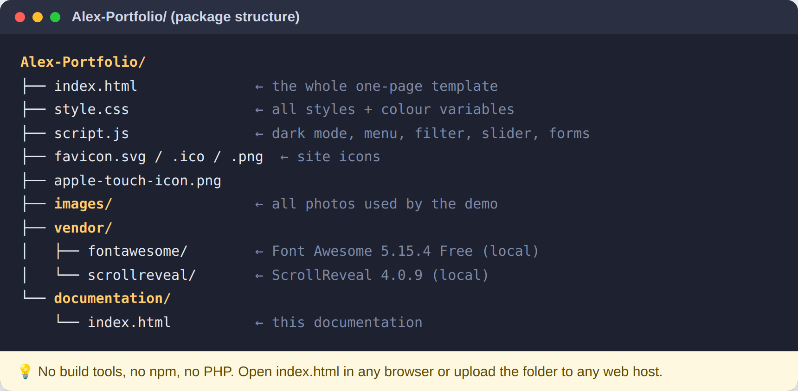
Package contents and what each file does (click to enlarge)
4. Editing text
All text lives in index.html. Every section starts with an HTML comment such as <!-- About Section -->. Press Ctrl + F, search for that comment and change the words between the tags. Do not remove the tags or class names, as they connect the text to the styles.
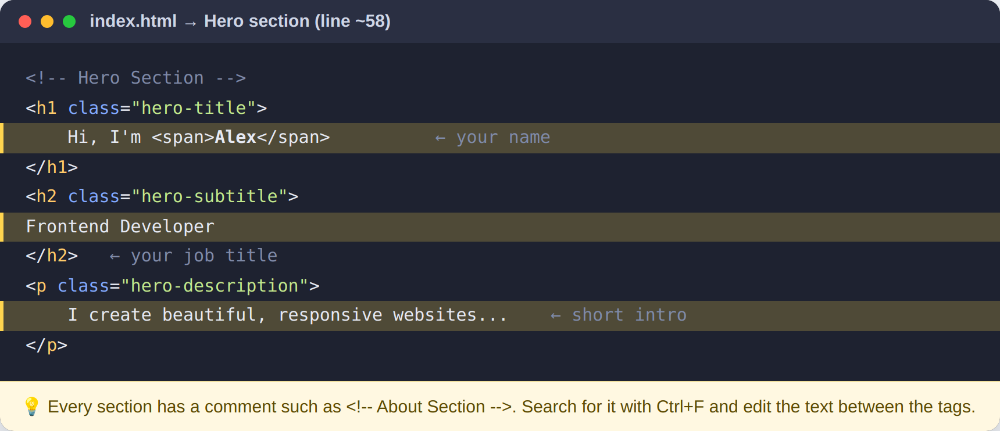
Hero text in index.html with the editable parts highlighted (click to enlarge)
Skills, services and portfolio items
- Skill bars: change the label, the visible percentage and the
data-widthvalue of the.progresselement. The bar animates to that width when it scrolls into view. - Services: each
.service-cardhas an icon, a title and a description. Duplicate a whole card to add another service. - Portfolio items: copy one
.portfolio-itemblock, change the image, the title and thedata-categoryvalue (web,apporgraphic).
Adding a portfolio category
Add a new button in the filter bar, then give your items the same value in data-category:
<button class="filter-btn" data-filter="photo">Photography</button>
<div class="portfolio-item" data-category="photo"> ... </div>
5. Changing colors
Colors are controlled by CSS variables at the very top of style.css. Changing a variable updates every element that uses it, so you never need to hunt through the file.
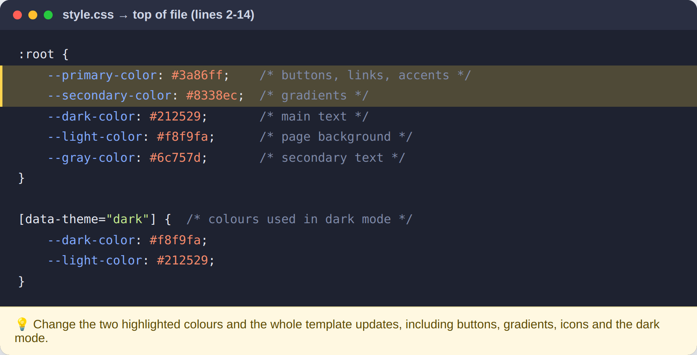
The color variables in style.css (click to enlarge)
6. Replacing images
Open the images folder and overwrite each file with your own picture, keeping the same file name. The recommended sizes below keep the layout sharp without making the page heavy.
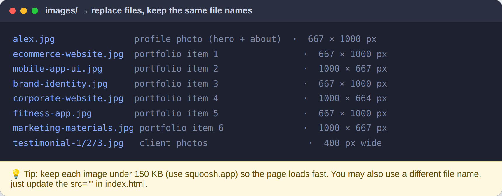
List of image files and their recommended dimensions (click to enlarge)
If you prefer a different file name, update the matching src attribute in index.html and write a short, meaningful alt description for accessibility. Avoid spaces in file names.
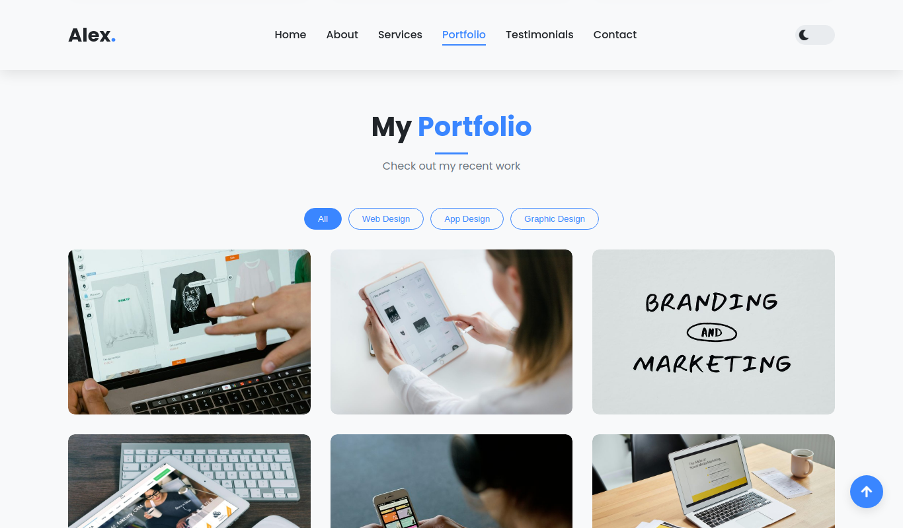
The portfolio grid. Hovering a card reveals the title and link buttons (click to enlarge)
7. Favicon
The template ships with four icon files in the root folder and the matching links inside the <head> of index.html. Replace the files with your own icons using the same names and sizes: favicon.svg (any size), favicon.ico (16, 32 and 48 px), favicon-32x32.png and apple-touch-icon.png (180 x 180 px).
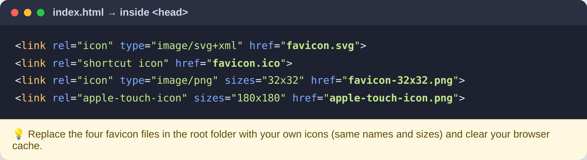
Favicon links in the head of index.html (click to enlarge)
8. Sections guide
About
Shows your photo, a short biography, contact details, the animated skill bars and a Download CV button. Point the button to your PDF by changing href="#" to for example href="cv/alex-cv.pdf" and adding the download attribute.
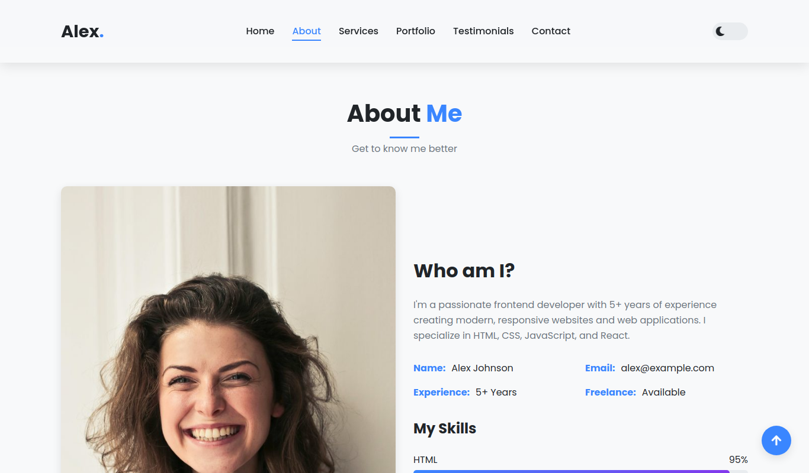
About section with biography and skills (click to enlarge)
Services
Six cards with icons. Icons come from Font Awesome 5 Free, so you can browse fontawesome.com/v5/search?m=free and use any free class such as fas fa-camera.
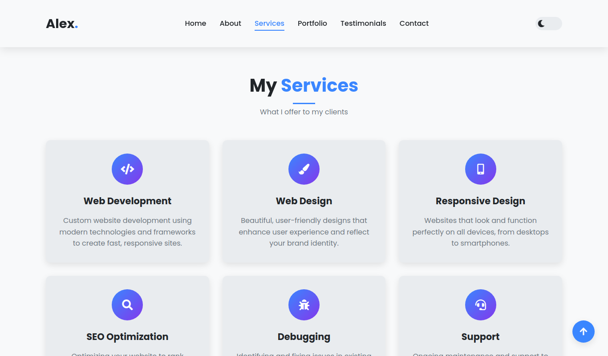
Services grid (click to enlarge)
Testimonials and Contact
Each testimonial is a .testimonial-slide. When you add or remove a slide, add or remove one <span class="dot"></span> in .slider-dots so the number of dots matches. Update the address, e-mail and phone in the contact cards and the footer.
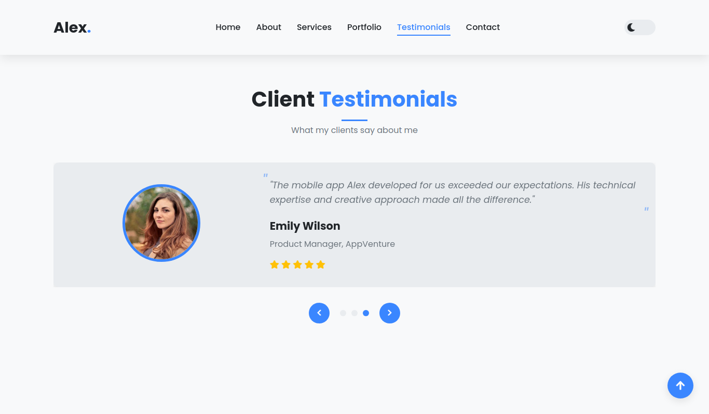
Testimonial slider with arrows and dots (click to enlarge)
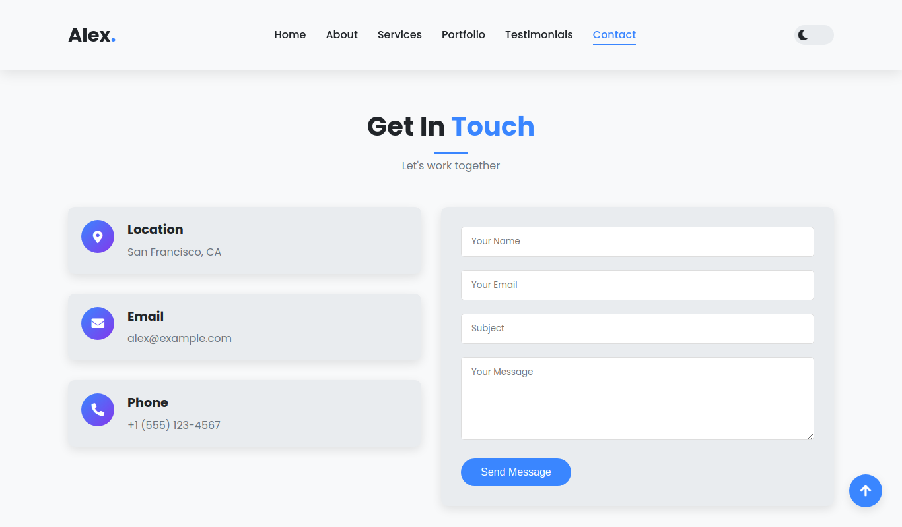
Contact cards and form (click to enlarge)
Changing the slider speed
In script.js find the following line. The number is in milliseconds.
setInterval(nextSlide, 5000);
Removing a section
Delete the whole <section> block and the matching link in the header navigation and footer. The scripts ignore sections that do not exist.
9. Dark mode
The moon/sun switch in the header toggles a data-theme="dark" attribute. The choice is stored in localStorage, and on the first visit the template follows the visitor's system setting. To start in dark mode for every new visitor, open script.js and change the condition if (savedTheme === 'dark' || (!savedTheme && prefersDark)) to if (savedTheme !== 'light').
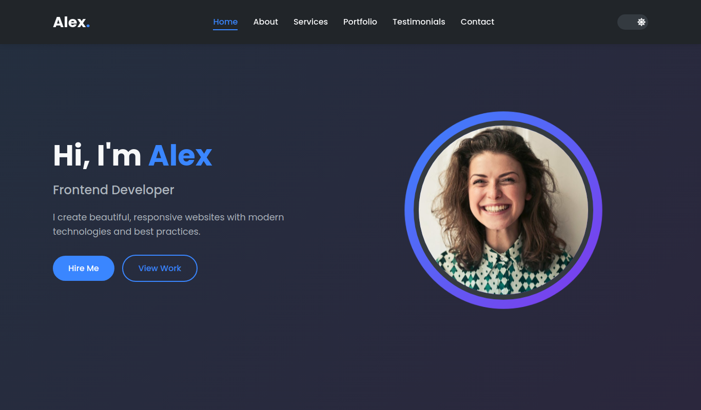
The same hero section in dark mode (click to enlarge)
10. Contact and newsletter forms
The forms are front-end only. By default, submitting them shows a thank-you message and clears the fields, so the demo works without a server. Before going live, connect them to a service such as Formspree, Netlify Forms, EmailJS or your own PHP script.
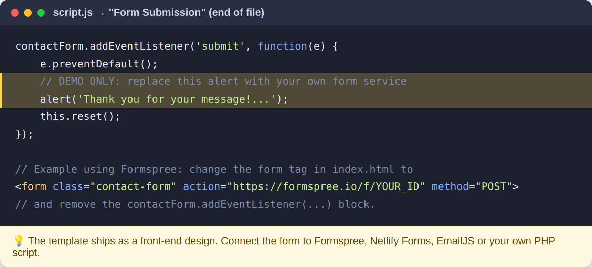
How to connect the contact form to a service (click to enlarge)
11. Responsive layout
The layout adapts at 992 px, 768 px and 576 px. On phones the navigation collapses into a hamburger menu and the grids stack into one column. You can test it by narrowing your browser window or using the device toolbar in Chrome DevTools (F12).
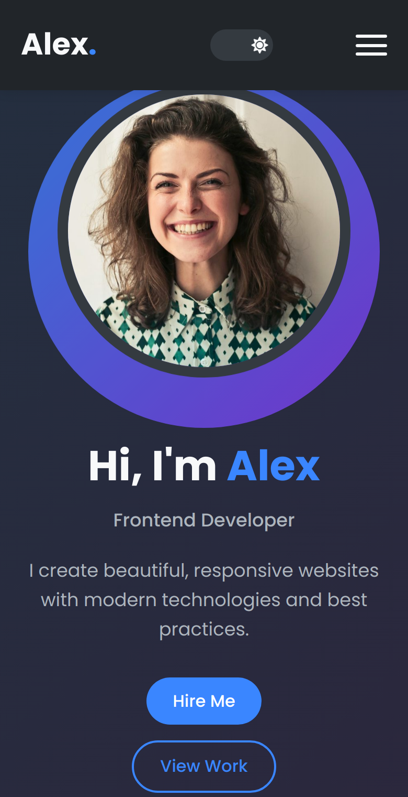
Mobile layout (click to enlarge)
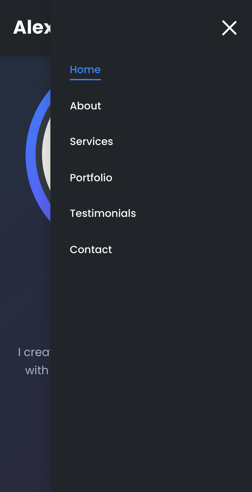
Mobile menu (click to enlarge)
12. Updating the template
When a new version is released you will see it on your ThemeForest Downloads page. To update safely:
- Download the new package and keep your current site folder as a backup.
- Compare the changelog below with your version number.
- Copy the new
style.cssandscript.jsover your old ones. If you edited those files, use a diff tool such as the free WinMerge or the VS Code Compare Selected feature to merge only the changes. - Your content in
index.htmland your own pictures inimagesare never touched by an update unless the changelog says so. - Clear your browser cache and test every section before uploading.
custom.css file loaded after style.css. Then future updates only require replacing style.css.<link rel="stylesheet" href="style.css"> <link rel="stylesheet" href="custom.css">
13. FAQ
The page looks unstyled on my server.
Make sure style.css is in the same folder as index.html and that file names keep their lowercase spelling. Some servers are case sensitive.
My new image does not appear.
Check that the file name in src matches exactly, including the extension, and avoid spaces in names.
Icons are showing as squares.
Keep the vendor/fontawesome folder complete: the css and webfonts folders must stay next to each other.
Can I use the template for client projects?
Yes, according to the Envato license you purchased. Regular License is for one end product, Extended License is for a product that charges end users.
How do I change the font?
Replace the Google Fonts link in the head of index.html with the font you want, then update the font-family value in style.css.
14. Credits
| Resource | Use | License |
|---|---|---|
| Font Awesome Free 5.15.4 | Icons (bundled in vendor/fontawesome) | Icons CC BY 4.0, fonts SIL OFL 1.1, code MIT |
| Poppins by Indian Type Foundry | Typeface via Google Fonts | SIL Open Font License 1.1 |
| Demo photographs | Preview only | Included for demonstration. They are not part of the licensed template, replace them with your own images. |
15. Changelog and support
Version 1.1
- Fixed all W3C validator errors (image file names without spaces, valid markup).
- Added favicon set and apple-touch-icon.
- Fixed JavaScript console errors (invalid
#selector, missing library). - Bundled Font Awesome locally and replaced the external animation library with a built-in reveal script.
- Optimized images from 16 MB to under 1 MB.
- Improved accessibility with descriptive alt text and button labels, and fixed horizontal scroll on phones.
Version 1.0
- Initial release.
Support
If you have a question, leave a comment on the item page on ThemeForest or use the author profile contact form. Please mention your purchase code and browser version. Support covers template issues and questions about the included features.